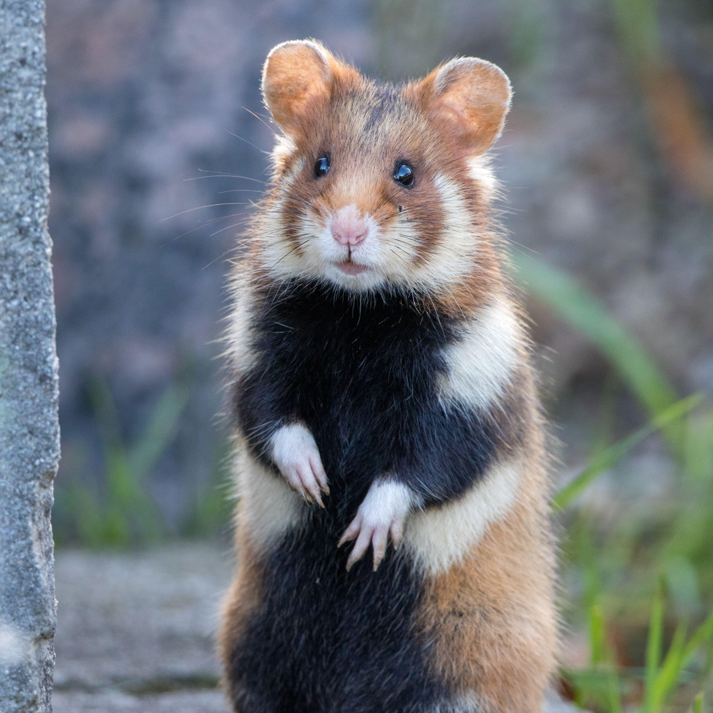

REX RAT
ABOUT
Rex refers to a genetic mutation that produces curly or wavy hair on rats. The rex mutation also occurs in cats, guinea pig, and rabbits
Manx Rat

ABOUT
Dumbo rats are known for their cute, low-slung, floppy ears that resemble those of the beloved Disney cartoon elephant
Bristle Coat Rat

ABOUT
As the name implies, bristle coat rats have coarse coats, like a wire brush. Their fur may even feel crunchy, like the coat of wirehair terriers.
Syrian Hamster

ABOUT
The golden hamster or Syrian hamster is a rodent belonging to the hamster subfamily, Cricetinae. Their natural geographical range is in an arid region of northern Syria and southern Turkey. Their numbers have been declining in the wild due to a loss of habitat from agriculture and deliberate elimination by humans. Wikipedia Lifespan: 2 – 3 years Gestation period: 15 – 18 days Length: 13 – 18 cm (Adult) Scientific name: Mesocricetus auratus Conservation status: Vulnerable (Population decreasing) Encyclopedia of Life Trophic level: Omnivorous Encyclopedia of Life Mass: 85 – 150 g (Adult)
Chinese Hamster
ABOUT
The Chinese hamster is a rodent in the genus Cricetulus of the subfamily Cricetidae that originated in the deserts of northern China and Mongolia. They are distinguished by an uncommonly long tail in comparison to other hamsters, most of whose tails are stubby. Wikipedia Lifespan: 2 – 3 years Mass: 30 – 45 g (Adult) Length: 8.2 – 13 cm (Adult) Tail length: 2 – 3.3 cm (Adult) Scientific name: Cricetulus griseus Higher classification: Cricetulus Family: Cricetidae
Winter White Russian Dwarf Hamster

ABOUT
The winter white dwarf hamster, also known as the Russian dwarf hamster, Djungarian hamster, striped dwarf hamster, Siberian hamster, or Siberian dwarf hamster, is one of three species of hamster in the genus Phodopus. Wikipedia Lifespan: 12 months (In the wild) Mass: 30 g (Adult) Encyclopedia of Life Scientific name: Phodopus sungorus Gestation period: 21 days Encyclopedia of Life Trophic level: Omnivorous Encyclopedia of Life Length: 8 cm (Adult) Encyclopedia of Life Conservation status: Least Concern Encyclopedia of Life
Campbell’s Russian Dwarf Hamster

ABOUT
Campbell's dwarf hamster is a species of hamster in the genus Phodopus. It was given its common name by Oldfield Thomas in honor of Charles William Campbell, who collected the first specimen in Mongolia on July 1, 1902. Wikipedia Lifespan: 2 – 2 years (In captivity, Born in the summer) Mass: 27 g (Adult) Encyclopedia of Life Length: 9.1 cm (Adult) Encyclopedia of Life Gestation period: 18 – 20 days (In captivity) Conservation status: Least Concern (Population stable) Encyclopedia of Life Class: Mammalia Kingdom: Animalia
Roborovski Dwarf Hamster

ABOUT
About The Roborovski hamster, also known as the desert hamster, Robo dwarf hamster, or simply dwarf hamster, is the smallest of three species of hamster in the genus Phodopus. It lives in the deserts of Central Asia, averaging under 2 centimetres at birth and 4.5–5 centimetres and 20–25 grams during adulthood. Wikipedia Lifespan: 2 – 3 years Mass: 20 – 25 g (Adult) Gestation period: 20 – 22 days Scientific name: Phodopus roborovskii Length: 4.5 – 5 cm (Adult) Trophic level: Omnivorous Encyclopedia of Life Conservation status: Least Concern (Population stable) Encyclopedia of Life
ONLINE_SHOPPING
1.PETS
2.PLANTS
3.PETS-ACCESSORIES
4.PLANTS-ACCESSORIES
5.PETS-SPA & PETS-CARE
6.PLANTS-CARE
7.ADD-YOUR PRODUCTS
COSTOMER POLICIES
CONTACT US
TERMS OF USE
TRACK ORDERS
SHIPPING
RETURNS
PRIVACY POLICY